INTERCONEXIÓN DE REDES
INTERCONEXIÓN DE REDES
FUNDAMENTOS DE LA INTERCONEXIÓN DE REDES
INSTALACIÓN Y CONFIGURACIÓN DE UN SISTEMA PASARELA
FUNDAMENTOS DE LA INTERCONEXIÓN DE REDES
INTRODUCCIÓN
Una red informática permite que diferentes dispositivos intercambien información y compartan recursos. Sin embargo, una red local aislada no permite acceder por sí sola a servicios situados en otras redes. Para comunicar redes diferentes es necesario disponer de sistemas de interconexión y configurar adecuadamente el tráfico.
En este capítulo se estudian los fundamentos del acceso desde una red privada a una red pública, así como el acceso en sentido contrario. El objetivo es comprender las funciones de la pasarela antes de abordar su instalación y configuración en los capítulos posteriores.
Al finalizar el capítulo, el alumnado deberá ser capaz de distinguir redes privadas y públicas, reconocer los tipos de direccionamiento, identificar las funciones del encaminamiento, NAT, cortafuegos y proxy, e interpretar arquitecturas básicas de acceso a Internet.
REDES PRIVADAS Y REDES PÚBLICAS
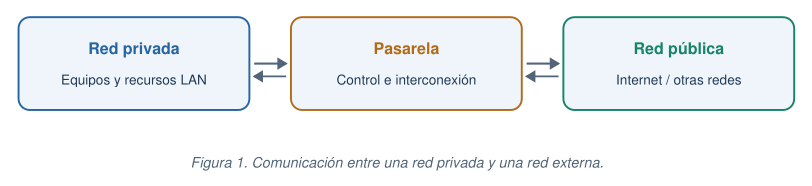
REDES PRIVADAS
Una red privada es una infraestructura cuyo acceso y administración están restringidos a una organización, vivienda o conjunto autorizado de usuarios. Puede utilizar tecnologías Ethernet o Wi-Fi y ofrecer servicios internos como impresión, almacenamiento, DNS o aplicaciones web.
Una LAN (Local Area Network) conecta dispositivos en un ámbito local. Aunque es habitual que una LAN utilice direcciones privadas, LAN y red privada no son conceptos equivalentes: el primero describe el ámbito de la red y el segundo su carácter de acceso y administración.
REDES PÚBLICAS
Una red pública proporciona conectividad a un conjunto amplio de usuarios o redes. Internet es una red de redes interconectadas mediante protocolos comunes. El hecho de que un servidor sea accesible desde Internet no implica que todos sus servicios sean públicos ni que carezca de mecanismos de autenticación.
| Característica | Red privada | Red pública (Internet) |
|---|---|---|
| Administración | Organización o titular de la red | Múltiples operadores y organizaciones |
| Acceso | Restringido según políticas internas | Conectividad entre redes, con restricciones posibles |
| Direccionamiento IPv4 | Habitualmente direcciones RFC 1918 | Direcciones globalmente encaminables |
| Servicios | Recursos internos o publicados | Servicios accesibles según su configuración |
Red de un centro educativo
Los equipos del aula comparten una red local y acceden a un servidor de archivos interno. Para visitar páginas web externas utilizan una pasarela que conecta la red del centro con la infraestructura del proveedor de Internet. El servidor de archivos no necesita estar expuesto a Internet.
DIRECCIONAMIENTO IP PÚBLICO Y PRIVADO
Una dirección IP identifica una interfaz en el contexto de una red IP. La máscara de subred o longitud de prefijo permite determinar qué direcciones pertenecen a la misma red. El direccionamiento es imprescindible para que los equipos decidan si un destino es local o si necesitan una pasarela.
DIRECCIONES IPv4 PRIVADAS
La RFC 1918 reserva tres bloques de direcciones IPv4 para redes privadas. Estos bloques pueden reutilizarse en organizaciones independientes y no se encaminan globalmente por Internet.
| Bloque CIDR | Primera dirección del bloque | Última dirección del bloque |
|---|---|---|
| 10.0.0.0/8 | 10.0.0.0 | 10.255.255.255 |
| 172.16.0.0/12 | 172.16.0.0 | 172.31.255.255 |
| 192.168.0.0/16 | 192.168.0.0 | 192.168.255.255 |
Los límites de los bloques no representan necesariamente direcciones asignables a equipos: las direcciones de red y de difusión dependen de la subred concreta. No todas las direcciones que comienzan por 172 son privadas.
DIRECCIONES IPv4 PÚBLICAS Y OTRAS DIRECCIONES ESPECIALES
Las direcciones IPv4 públicas globalmente encaminables se asignan siguiendo un sistema de coordinación internacional. Para recibir tráfico desde Internet también se necesita que existan rutas, reglas de seguridad y servicios accesibles.
No toda dirección que esté fuera de los bloques RFC 1918 es pública. Por ejemplo, 127.0.0.0/8 está reservado para loopback, 169.254.0.0/16 para enlace local y 100.64.0.0/10 para espacio compartido utilizado habitualmente en CG-NAT. Los bloques 192.0.2.0/24, 198.51.100.0/24 y 203.0.113.0/24 están reservados para documentación; los utilizaremos para representar redes externas ficticias, no destinos reales de Internet.
DIRECCIONAMIENTO IPv6
IPv6 dispone de direcciones unicast globales, direcciones locales únicas (ULA, fc00::/7, con fd00::/8 para asignación local) y direcciones de enlace local (fe80::/10). Una red IPv6 puede disponer de direcciones globales sin necesitar traducción de direcciones para acceder a Internet. Esto no elimina la necesidad de un cortafuegos ni de políticas de acceso.
Identificación de una red local
Un ordenador tiene la dirección 192.168.10.25/24. Su red es 192.168.10.0/24, su máscara es 255.255.255.0 y su dirección de difusión es 192.168.10.255. Un destino 192.168.10.80 pertenece a esa misma subred; un destino 203.0.113.20 no pertenece a ella y normalmente se alcanza mediante un router. Se trata de un destino externo ficticio utilizado con fines didácticos.
CONCEPTO DE PASARELA (GATEWAY)
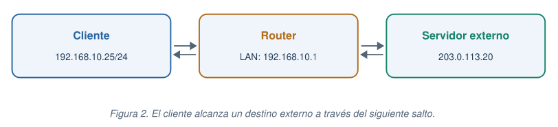
Una pasarela es un sistema que posibilita la comunicación entre redes o sistemas. En el contexto IP, la puerta de enlace predeterminada es el siguiente salto al que un equipo envía paquetes cuando no dispone de una ruta más específica hacia el destino.
Un equipo puede tener varias rutas y no necesariamente utilizar una sola pasarela para todos los destinos. La puerta de enlace debe ser alcanzable desde el equipo, normalmente mediante una dirección perteneciente a su propia subred.
CONFIGURACIÓN BÁSICA DE UN CLIENTE
| Parámetro | Valor de ejemplo | Función |
|---|---|---|
| Dirección IP | 192.168.10.25 | Identifica la interfaz del cliente |
| Prefijo | /24 | Define la subred local |
| Puerta de enlace | 192.168.10.1 | Siguiente salto para destinos sin ruta específica |
| Servidor DNS | 192.168.10.53 | Resuelve nombres si el servicio está configurado |
DNS y puerta de enlace son funciones distintas. DNS permite obtener, entre otros datos, las direcciones IP asociadas a nombres; la pasarela permite alcanzar destinos situados en otras redes. Ambos servicios pueden residir en la misma máquina o en máquinas diferentes.
FUNCIONAMIENTO BÁSICO
Cuando un cliente envía un paquete a un destino de su propia subred, obtiene la dirección de enlace del destinatario mediante ARP en IPv4 o Neighbor Discovery en IPv6. Si el destino está en otra red, utiliza la dirección de enlace del siguiente salto. La dirección IP de destino sigue siendo la del equipo final, salvo que intervenga un mecanismo de traducción.
La pasarela consulta su tabla de encaminamiento y, si el reenvío está habilitado y las políticas lo permiten, transmite el paquete por la interfaz correspondiente. Debe existir también un camino de retorno para que la comunicación sea bidireccional.
Acceso a un servidor externo
El equipo 192.168.10.25 desea comunicarse con 203.0.113.20. Como el destino no pertenece a la red local, envía la trama a la interfaz LAN de su router, 192.168.10.1. El router decide cómo reenviar el paquete. En una salida habitual a Internet mediante IPv4 privada también será necesaria una traducción de origen en algún punto de la infraestructura.
DISPOSITIVOS Y SISTEMAS DE INTERCONEXIÓN
| Elemento | Función principal |
|---|---|
| Switch | Conecta dispositivos en una red de nivel de enlace y reenvía tramas según direcciones MAC. |
| Punto de acceso | Proporciona acceso inalámbrico a una red local. |
| Router | Interconecta redes IP y encamina paquetes. |
| Cortafuegos | Permite o bloquea comunicaciones según una política de seguridad. |
| Sistema NAT | Modifica direcciones IP y, en su caso, puertos de transporte. |
| Servidor proxy | Intermedia comunicaciones de clientes o servidores para los protocolos que admite. |
| Módem u ONT | Adapta la conexión a la tecnología de acceso del operador; una ONT termina el enlace óptico. |
Un router doméstico suele integrar varias de estas funciones en el mismo dispositivo: router IP, switch, punto de acceso, NAT, cortafuegos y servicios auxiliares como DHCP o DNS. Una infraestructura empresarial puede repartirlas entre varios sistemas independientes.
Un ordenador con un sistema operativo apropiado y conectividad hacia dos redes puede actuar como pasarela mediante software. Las interfaces pueden ser físicas o virtuales. Disponer de dos interfaces no implica que el equipo reenvíe automáticamente el tráfico entre ellas.
INTERCONEXIÓN A NIVEL DE RED Y A NIVEL DE APLICACIÓN
INTERCONEXIÓN A NIVEL DE RED
El encaminamiento IP trabaja principalmente en el nivel de red (capa 3 del modelo OSI). Un router recibe paquetes, selecciona el siguiente salto y los reenvía. El cliente normalmente no tiene que configurar cada aplicación para utilizar el router.
NAT y el filtrado de paquetes pueden examinar o modificar información de los niveles de red y transporte, como direcciones IP y puertos TCP o UDP. Un cortafuegos avanzado puede analizar también información de capas superiores.
INTERCONEXIÓN A NIVEL DE APLICACIÓN
Un proxy de aplicación recibe solicitudes de un cliente y establece una comunicación con el destino en su nombre. Un proxy HTTP, por ejemplo, puede interpretar solicitudes HTTP y aplicar políticas según el método, el dominio u otros datos disponibles.
En HTTPS, un proxy directo puede establecer un túnel mediante CONNECT sin descifrar el contenido de la comunicación. Por ello, no siempre puede inspeccionar las URL completas ni almacenar los recursos cifrados en caché. Un proxy inverso que termina TLS sí puede procesar el contenido HTTP que recibe, según su configuración.
| Aspecto | Encaminamiento IP | Proxy HTTP |
|---|---|---|
| Unidad principal | Paquete IP | Solicitud o comunicación de aplicación |
| Configuración del cliente | Rutas y puerta de enlace | Proxy explícito, automático u otro mecanismo de intermediación |
| Protocolos | Tráfico IP encaminable según políticas | Protocolos admitidos por el proxy |
| Inspección | Cabeceras IP y, según el sistema, transporte | Datos de aplicación disponibles |
| Caché de recursos web | No es función del encaminamiento | Posible si el protocolo y las políticas lo permiten |
Dos formas de acceder a una web
En el acceso directo, el navegador establece una comunicación con el servidor web a través de los routers de la red. Con un proxy HTTP explícito, el navegador se conecta primero al proxy; este realiza la solicitud al servidor de destino o establece el túnel correspondiente. La infraestructura que conecta el proxy a Internet puede utilizar a su vez encaminamiento y NAT.
DIFERENCIAS ENTRE ROUTER, CORTAFUEGOS, NAT Y SERVIDOR PROXY
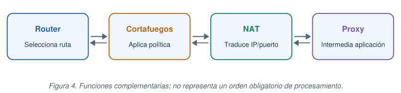
ROUTER
Su función esencial es seleccionar rutas y reenviar paquetes entre redes. No necesita modificar las direcciones IP de origen o destino para cumplir esa función. El encaminamiento por sí solo no constituye una política de seguridad.
CORTAFUEGOS
Aplica reglas de acceso. Por ejemplo, puede permitir conexiones iniciadas desde la LAN y bloquear conexiones entrantes no autorizadas. Los cortafuegos con seguimiento de estado pueden reconocer tráfico perteneciente a conexiones ya establecidas.
NAT
La traducción de direcciones de red permite modificar las direcciones de origen o destino de los paquetes. En IPv4 es habitual compartir una dirección externa mediante traducción de direcciones y puertos (PAT). La traducción de destino (DNAT) puede emplearse para publicar un servicio interno mediante una dirección o puerto externo.
NAT no equivale a un cortafuegos: traducir direcciones y aplicar políticas de seguridad son operaciones distintas, aunque suelen integrarse en el mismo equipo.
SERVIDOR PROXY
Actúa como intermediario en las comunicaciones. Un proxy directo representa a los clientes frente a los servidores externos. Un proxy inverso representa a los servidores frente a los clientes. Según el protocolo y la configuración, puede ofrecer autenticación, filtrado, registro de actividad o caché.
| Tecnología | Pregunta que resuelve | Ejemplo |
|---|---|---|
| Router | ¿Por qué interfaz o siguiente salto envío el paquete? | Comunicar dos subredes. |
| Cortafuegos | ¿Está permitida esta comunicación? | Bloquear accesos entrantes no autorizados. |
| NAT | ¿Qué dirección o puerto debo traducir? | Compartir una dirección IPv4 externa. |
| Proxy | ¿Cómo intermedio esta comunicación de aplicación? | Controlar el acceso web o publicar una aplicación. |
Funciones que trabajan conjuntamente
Una empresa permite la navegación web de sus empleados mediante un proxy directo. El cortafuegos restringe el acceso directo a Internet desde los clientes. El router encamina el tráfico permitido y NAT traduce las direcciones privadas cuando resulta necesario. Cada mecanismo cumple una función distinta dentro de la misma arquitectura.
ESCENARIOS HABITUALES DE INTERCONEXIÓN
ACCESO DE UNA RED PRIVADA A INTERNET
Los dispositivos internos utilizan una pasarela para alcanzar servidores externos. En una red IPv4 con direccionamiento privado, es frecuente utilizar PAT junto con un cortafuegos. En IPv6 puede utilizarse encaminamiento sin NAT.
INTERCONEXIÓN DE REDES PRIVADAS
Dos redes internas con prefijos diferentes pueden comunicarse a través de un router. Si ambas disponen de rutas correctas, no hay solapamiento de direcciones y las políticas autorizan el tráfico, no es necesario utilizar NAT. Por ejemplo, una organización puede separar la red de administración de la red de alumnado.
ACCESO CONTROLADO A INTERNET
Una organización puede establecer reglas por origen, destino, puerto o usuario. Un proxy directo permite aplicar políticas de aplicación cuando el protocolo y la configuración lo permiten. En un centro educativo podría limitarse el acceso a determinados recursos durante las clases.
OPTIMIZACIÓN DE LAS COMUNICACIONES
Una caché almacena recursos reutilizables para reducir transferencias repetidas y, en ocasiones, la latencia. Su eficacia depende de que el contenido sea reutilizable, de las políticas de caché y del cifrado. La caché no acelera necesariamente todas las comunicaciones; tampoco aumenta la capacidad física de la conexión.
PUBLICACIÓN DE SERVICIOS INTERNOS
Una organización puede hacer accesible un servidor web interno mediante DNAT o un proxy inverso. Se deben limitar los servicios expuestos, aplicar reglas de cortafuegos y comprobar el acceso desde una red externa. La existencia de una dirección pública accesible o de una solución alternativa es una condición importante; el CG-NAT puede impedir la redirección directa desde Internet.
Separación de redes en un centro educativo
La red de alumnado utiliza 192.168.20.0/24 y la red de administración utiliza 192.168.30.0/24. Una pasarela comunica ambas redes, pero un cortafuegos impide que los equipos del alumnado accedan a los recursos administrativos. Ambas redes pueden disponer de salida a Internet sin que exista acceso libre entre ellas.
ARQUITECTURAS DE ACCESO A INTERNET
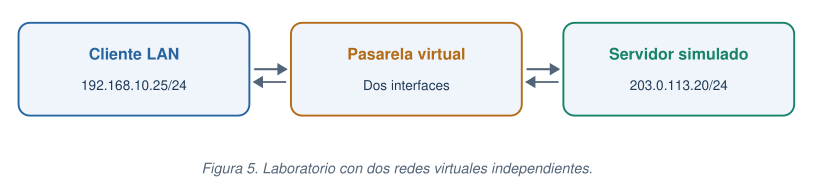
ARQUITECTURA DOMÉSTICA
El router del operador integra habitualmente la puerta de enlace, NAT IPv4 y cortafuegos, además del switch y el acceso Wi-Fi. Los clientes pueden recibir automáticamente su configuración mediante DHCP. La interfaz WAN conecta con la red del proveedor, aunque su dirección no tiene por qué ser pública si el operador utiliza CG-NAT.
ARQUITECTURA CON UNA PASARELA DEDICADA
Un sistema dedicado dispone de conectividad LAN y WAN. Puede realizar encaminamiento, filtrado y NAT mediante software. Esta arquitectura permite estudiar las funciones por separado y resulta especialmente apropiada para un laboratorio de máquinas virtuales.
ARQUITECTURA CON PROXY DIRECTO
Los clientes utilizan un proxy para acceder a servicios externos. El proxy puede estar instalado en la propia pasarela o en otro equipo. El cortafuegos puede impedir que los clientes eludan las políticas mediante conexiones directas, siempre que las reglas cubran los protocolos y rutas pertinentes.
ARQUITECTURA CON SERVICIOS PUBLICADOS Y DMZ
Una DMZ es una red separada en la que pueden situarse servicios accesibles desde el exterior. Un cortafuegos controla las comunicaciones entre Internet, la DMZ y la LAN. La finalidad es reducir el impacto de una posible intrusión en un servicio publicado. Una DMZ real no equivale a la opción denominada «DMZ host» de algunos routers domésticos, que suele redirigir tráfico entrante a un único equipo.
| Arquitectura | Aplicación habitual | Mecanismos principales |
|---|---|---|
| Router integrado | Vivienda o pequeña oficina | Encaminamiento, NAT y cortafuegos |
| Pasarela dedicada | Laboratorio o empresa | Interfaces, rutas, reenvío y políticas |
| Proxy directo | Centro educativo o empresa | Intermediación, ACL y caché cuando procede |
| DMZ y publicación | Servicios accesibles desde el exterior | Segmentación, cortafuegos, DNAT o proxy inverso |
Diseño de un laboratorio virtual
Se crean tres máquinas virtuales: un cliente con 192.168.10.25/24, una pasarela con dos interfaces (192.168.10.1/24 y 203.0.113.1/24) y un servidor externo simulado con 203.0.113.20/24. El cliente utiliza 192.168.10.1 como puerta de enlace y el servidor utiliza 203.0.113.1. Las dos redes virtuales deben estar aisladas entre sí salvo por la pasarela. Al habilitar el reenvío y permitir el tráfico, se puede comprobar la comunicación entre redes sin NAT, ya que existe un camino de retorno. En capítulos posteriores se incorporarán traducción de direcciones y reglas de filtrado para comparar sus efectos. La red externa simulada no representa una conexión real a Internet.
INSTALACIÓN Y CONFIGURACIÓN DE UN SISTEMA PASARELA
Una vez estudiadas las funciones de los sistemas de interconexión, el siguiente paso consiste en preparar un equipo capaz de comunicarse con dos redes distintas. Este capítulo aborda la instalación del hardware, la configuración básica de las interfaces y la selección del software necesario para convertir el equipo en una pasarela.
El objetivo es conseguir una infraestructura correctamente configurada antes de habilitar el encaminamiento, NAT, el filtrado de paquetes o los servicios proxy, que se estudiarán en los capítulos siguientes. Disponer de conectividad en ambas interfaces no implica, por sí solo, que los clientes de una red puedan comunicarse con la otra.
ARQUITECTURA DE UN SISTEMA PASARELA
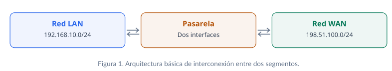
ELEMENTOS DE LA ARQUITECTURA
Una pasarela puede implementarse mediante un router dedicado, un ordenador de propósito general, un servidor virtualizado o un dispositivo especializado. En el escenario básico dispone de dos conexiones lógicas, una hacia la red interna y otra hacia la red externa. Cada conexión pertenece normalmente a una subred IP diferente.
PLANO DE DATOS Y ADMINISTRACIÓN
El tráfico de los usuarios constituye el plano de datos. La configuración de interfaces, rutas, políticas y servicios forma parte de las tareas de administración. Es conveniente limitar el acceso a las herramientas de administración a equipos autorizados de la red interna o a una red de gestión independiente.
Pasarela de un aula informática
Un equipo conecta la red de los ordenadores del aula con la red del centro. Su interfaz LAN tiene la dirección 192.168.10.1/24 y su interfaz WAN tiene la dirección 198.51.100.2/24. El router de la red externa tiene la dirección 198.51.100.1. Los clientes del aula utilizarán 192.168.10.1 como puerta de enlace cuando se configure el encaminamiento. Las direcciones 198.51.100.0/24 son de documentación: representan aquí una red externa simulada, no una conexión real a Internet.
REQUISITOS HARDWARE Y SOFTWARE
COMPONENTES HARDWARE
El dimensionamiento depende del número de usuarios, del volumen de tráfico, de la velocidad de las conexiones y de los servicios que ejecutará la pasarela. No existe un requisito universal de memoria o potencia de procesamiento.
| Componente | Consideraciones |
|---|---|
| Procesador | Capacidad suficiente para reenviar paquetes, filtrar tráfico y ejecutar servicios. |
| Memoria RAM | Necesaria para el sistema, las conexiones activas y posibles procesos de caché. |
| Almacenamiento | Sistema operativo, configuración, registros y, si procede, caché en disco. |
| Interfaces de red | Compatibilidad con el sistema operativo, velocidad y separación de segmentos. |
| Alimentación | Estabilidad eléctrica; un SAI puede ser útil cuando la disponibilidad es importante. |
Una pasarela con dos tarjetas Ethernet suele ser la opción más sencilla para un laboratorio. También pueden utilizarse interfaces inalámbricas o virtuales y subinterfaces VLAN. Una única tarjeta física puede transportar varias redes lógicas mediante etiquetado VLAN si el equipo y el conmutador están configurados adecuadamente; este diseño requiere especial cuidado para mantener el aislamiento.
COMPONENTES SOFTWARE
El sistema operativo debe reconocer los adaptadores, implementar la pila TCP/IP y proporcionar mecanismos de configuración de red. Según la arquitectura elegida, también serán necesarios componentes de encaminamiento, filtrado, traducción de direcciones o proxy.
| Componente | Función |
|---|---|
| Controladores de red | Permiten al sistema operativo utilizar las interfaces. |
| Pila TCP/IP | Procesa los protocolos de comunicación. |
| Gestor de configuración de red | Establece direcciones, rutas y parámetros DNS. |
| Motor de encaminamiento y filtrado | Reenvía o restringe paquetes según la configuración. |
| Servicios de aplicación | Pueden incorporar proxy, autenticación, caché o administración. |
| Herramientas de diagnóstico | Permiten comprobar interfaces, conectividad y tráfico. |
INSTALACIÓN DEL SISTEMA
Antes de instalar una tarjeta física se debe apagar y desconectar el equipo cuando el procedimiento del fabricante así lo requiera. Se comprueba la compatibilidad del adaptador, se instala en una ranura adecuada o se conecta al puerto correspondiente y se conectan los cables a los segmentos previstos. Una vez iniciado el sistema se verifica que los dispositivos son reconocidos y que los controladores funcionan.
Se recomienda identificar y etiquetar las conexiones LAN y WAN, actualizar el sistema mediante un procedimiento autorizado, configurar credenciales administrativas seguras y guardar una copia de la configuración inicial. No se deben activar servicios de administración innecesarios en la interfaz externa.
Dimensionamiento de un laboratorio
Para practicar con una pasarela virtual sin interfaz gráfica y dos clientes de prueba puede comenzarse con 2 CPU virtuales, 2 GB de RAM, 16 GB de disco y dos adaptadores virtuales. Estos valores son orientativos, no requisitos mínimos universales. Un proxy con caché en disco o una distribución especializada puede necesitar recursos adicionales.
INTERFACES DE RED INTERNAS Y EXTERNAS (LAN Y WAN)
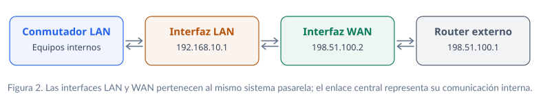
IDENTIFICACIÓN Y FUNCIÓN DE LAS INTERFACES
Una interfaz es el punto de conexión de un sistema con una red. Puede ser física o lógica. El nombre asignado por el sistema operativo no determina su función: una interfaz se considera LAN o WAN según la red a la que se conecta y el papel que se le asigna.
| Aspecto | Interfaz LAN | Interfaz WAN |
|---|---|---|
| Conexión habitual | Conmutador o red interna | Router externo, proveedor o red de tránsito |
| Direccionamiento | Normalmente privado y estable | Estático o dinámico, público o privado |
| Acceso | Clientes y servicios internos autorizados | Redes externas y tráfico sujeto a políticas |
| Ruta predeterminada de la pasarela | Normalmente no se configura por esta interfaz | Habitualmente apunta al router externo |
Una WAN no tiene por qué disponer de una dirección pública: puede estar situada detrás de otro router con NAT o de una infraestructura de laboratorio. La velocidad o la tecnología del enlace tampoco define si una interfaz es LAN o WAN.
IDENTIFICACIÓN DE ADAPTADORES Y COMPROBACIÓN DEL ENLACE
Conviene registrar el nombre lógico, la dirección MAC, el puerto físico o virtual y el segmento asociado a cada interfaz. El estado administrativo indica si la interfaz está habilitada; el estado del enlace indica si existe conexión con el medio o dispositivo correspondiente. Una interfaz habilitada puede carecer de enlace si el cable está desconectado o el adaptador virtual no está conectado.
En Ethernet, la velocidad y el dúplex deben ser compatibles con el otro extremo. Habitualmente se utiliza negociación automática. Un enlace activo no garantiza que la dirección IP, la VLAN o la ruta sean correctas.
Inventario de interfaces
Una máquina tiene dos adaptadores identificados como interfaz A e interfaz B. La interfaz A se conecta al conmutador del aula y se etiqueta LAN. La interfaz B se conecta al router externo y se etiqueta WAN. Si se intercambian los cables, el sistema puede conservar los mismos nombres y direcciones IP, pero las redes dejarán de corresponderse con la configuración prevista.
CONFIGURACIÓN DEL DIRECCIONAMIENTO IP
PLANIFICACIÓN DEL DIRECCIONAMIENTO
Antes de asignar direcciones se debe definir el prefijo de cada segmento, reservar las direcciones de infraestructura y evitar duplicidades. En una pasarela convencional las subredes de LAN y WAN no deben solaparse: de lo contrario, la selección de la interfaz de salida y la resolución de vecinos pueden resultar ambiguas.
Se utilizará el siguiente escenario de referencia durante el capítulo. La LAN es privada y la WAN es una red externa simulada. Las direcciones de documentación no deben utilizarse como destinos reales en Internet.
| Equipo o interfaz | Dirección IPv4 | Prefijo | Puerta de enlace |
|---|---|---|---|
| Cliente A | 192.168.10.25 | /24 | 192.168.10.1 |
| Cliente B | 192.168.10.26 | /24 | 192.168.10.1 |
| DNS interno (opcional) | 192.168.10.53 | /24 | 192.168.10.1 |
| Pasarela LAN | 192.168.10.1 | /24 | No se configura |
| Pasarela WAN | 198.51.100.2 | /24 | 198.51.100.1 |
| Router externo | 198.51.100.1 | /24 | Según la topología externa |
| Servidor de prueba externo | 198.51.100.20 | /24 | 198.51.100.1 |
La máscara /24 equivale a 255.255.255.0. En la LAN, 192.168.10.0 identifica la red y 192.168.10.255 es su dirección de difusión. En la WAN simulada, esas funciones corresponden a 198.51.100.0 y 198.51.100.255 respectivamente.
CONFIGURACIÓN ESTÁTICA Y DINÁMICA
Una configuración estática se establece manualmente y permanece estable mientras no se modifique. Es especialmente apropiada para la interfaz interna de la pasarela, ya que los clientes necesitan conocer su dirección.
La configuración dinámica puede obtenerse mediante DHCP en IPv4. Una interfaz WAN puede recibir su dirección, prefijo, ruta predeterminada y servidores DNS del router externo. En una LAN, un servidor DHCP puede distribuir a los clientes estos mismos parámetros, indicando como router la dirección LAN de la pasarela. El servidor DHCP no tiene por qué ejecutarse en la propia pasarela.
Se deben excluir del intervalo DHCP las direcciones asignadas manualmente a infraestructura, o utilizar reservas gestionadas por el servidor DHCP. También debe evitarse que servidores DHCP no coordinados atiendan el mismo segmento.
Intervalo DHCP de la LAN
En la subred 192.168.10.0/24 se reservan las direcciones 192.168.10.1 a 192.168.10.99 para infraestructura y asignaciones manuales. El servidor DHCP entrega direcciones de 192.168.10.100 a 192.168.10.199, con prefijo /24, router 192.168.10.1 y DNS 192.168.10.53 si ese servicio está disponible. Los clientes A y B del escenario conservan sus direcciones estáticas fuera del intervalo.
PERSISTENCIA Y COMPROBACIONES
La configuración aplicada temporalmente para una prueba puede perderse al reiniciar. Debe utilizarse el mecanismo persistente del sistema elegido y evitar que varios gestores modifiquen simultáneamente una interfaz. Antes de modificar la interfaz utilizada para administrar remotamente un equipo conviene disponer de acceso local o de un método de recuperación.
En IPv6, las interfaces pueden obtener direcciones y rutas mediante anuncios de router (RA), SLAAC y, según el caso, DHCPv6 o configuración manual. La ruta predeterminada se aprende normalmente mediante RA, no mediante DHCPv6. El diseño IPv6 requiere políticas de seguridad propias; no debe suponerse que las reglas IPv4 también lo protegen.
CONFIGURACIÓN DE LA PUERTA DE ENLACE PREDETERMINADA
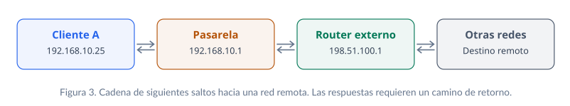
FUNCIÓN DE LA RUTA PREDETERMINADA
Un equipo utiliza su tabla de encaminamiento para decidir cómo alcanzar un destino IP. Si existe una ruta directamente conectada o una ruta más específica, se utiliza la que corresponda según la longitud del prefijo y las reglas del sistema. La ruta predeterminada IPv4 (0.0.0.0/0) se utiliza cuando no existe una ruta más específica aplicable.
En el escenario básico, los clientes apuntan a la interfaz LAN de la pasarela y la pasarela apunta al router de la WAN. Normalmente se configura una única ruta predeterminada para esta topología. Las arquitecturas con varias salidas, métricas o encaminamiento basado en políticas se tratarían de forma específica.
| Sistema | Destino | Siguiente salto o interfaz |
|---|---|---|
| Cliente A | 192.168.10.0/24 | Directamente conectado a LAN |
| Cliente A | 0.0.0.0/0 | 192.168.10.1 |
| Pasarela | 192.168.10.0/24 | Directamente conectado a LAN |
| Pasarela | 198.51.100.0/24 | Directamente conectado a WAN |
| Pasarela | 0.0.0.0/0 | 198.51.100.1 |
El siguiente salto debe ser alcanzable por la interfaz correspondiente. No debe confundirse la dirección de la interfaz WAN de la propia pasarela con la dirección del router externo. Tampoco debe configurarse en un cliente una puerta de enlace situada en una subred remota en el escenario convencional.
CAMINO DE RETORNO
Para que una comunicación funcione, las respuestas también deben poder llegar al origen. Si no se utiliza NAT, los equipos o routers de la red externa necesitan una ruta válida hacia 192.168.10.0/24 a través de 198.51.100.2. Cuando se utiliza NAT de origen, la traducción y el seguimiento de conexiones permiten que las respuestas regresen a través de la pasarela, siempre que las demás condiciones de conectividad y filtrado se cumplan.
Dos pruebas diferentes
El cliente A envía tráfico a 192.168.10.26 directamente por la LAN. Si intenta alcanzar 198.51.100.20, entrega el paquete a 192.168.10.1. La pasarela ya dispone de una ruta directamente conectada hacia 198.51.100.0/24, pero solo reenviará el paquete si el reenvío IP y las reglas correspondientes lo permiten. El servidor externo necesitará además un camino de retorno o una traducción NAT adecuada.
CONFIGURACIÓN DE LOS SERVIDORES DNS
ALTERNATIVAS DE CONFIGURACIÓN
| Alternativa | Características |
|---|---|
| DNS interno | Permite resolver nombres privados y aplicar políticas de la organización. |
| DNS del proveedor | Puede ser suministrado junto con la configuración WAN. |
| DNS público | Resolver externo elegido conforme a las políticas de la red. |
| DNS en la pasarela | Requiere instalar o habilitar un servicio DNS real; puede reenviar consultas y mantener caché. |
La pasarela necesita sus propios parámetros DNS si utiliza nombres para actualizaciones o servicios. Los clientes pueden utilizar otros resolvedores, siempre que puedan alcanzarlos y tengan permiso. No se debe indicar la dirección de la pasarela como servidor DNS salvo que realmente preste ese servicio.
Las consultas DNS tradicionales utilizan UDP y TCP en el puerto 53. Existen también mecanismos cifrados, como DNS sobre TLS y DNS sobre HTTPS. Su utilización puede afectar a las políticas de resolución y filtrado; deben respetarse las directrices de la organización.
Resolución de un nombre de laboratorio
El DNS interno 192.168.10.53 contiene un registro A para servidor.lab.test con valor 198.51.100.20. Un cliente consulta ese DNS y obtiene la dirección. Aunque la consulta sea correcta, el acceso al servidor externo todavía depende del encaminamiento y de las reglas de seguridad. El sufijo .test está reservado para pruebas; es necesario configurar explícitamente ese registro en el laboratorio.
DIAGNÓSTICO BÁSICO
Si un destino IP responde, pero su nombre no se resuelve, se revisan los servidores DNS configurados, la conectividad con ellos y los registros solicitados. Si un nombre se resuelve pero el servicio no responde, se comprueba el acceso al puerto de la aplicación, las rutas y el filtrado. Una prueba ICMP fallida no demuestra por sí sola que un servicio TCP o UDP sea inaccesible.
SISTEMAS FÍSICOS Y SISTEMAS VIRTUALIZADOS
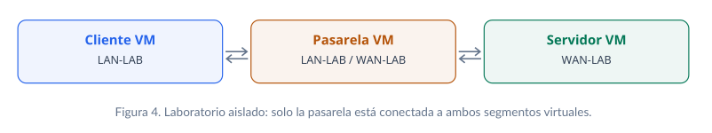
PASARELA FÍSICA
Un equipo dedicado puede conectarse mediante tarjetas y conmutadores independientes a las redes LAN y WAN. Facilita la identificación de cables y permite observar el funcionamiento de una infraestructura real. Sin embargo, requiere hardware, alimentación y espacio, y los cambios pueden afectar a usuarios reales si no se aísla correctamente el laboratorio.
PASARELA VIRTUALIZADA
Un hipervisor permite crear adaptadores y conmutadores virtuales para representar distintas redes. Cada máquina virtual dispone de sus propias interfaces, direcciones y sistema operativo. Es posible construir un laboratorio completo dentro de un único ordenador físico.
| Modalidad de red virtual | Comportamiento habitual |
|---|---|
| Red interna o aislada | Comunica máquinas virtuales conectadas al mismo segmento virtual. |
| Solo anfitrión (host-only) | Comunica normalmente las máquinas virtuales con el anfitrión y entre sí. |
| Puente (bridged) | Conecta la máquina virtual al segmento externo del anfitrión. |
| NAT del hipervisor | Facilita acceso externo mediante traducción realizada por el hipervisor. |
Los nombres y detalles dependen del hipervisor. Una modalidad NAT puede aislar individualmente cada máquina virtual; una red NAT compartida puede permitir comunicación entre máquinas. Debe consultarse la configuración efectiva antes de diseñar el laboratorio.
DISEÑO DE UN LABORATORIO AISLADO
Se crean dos segmentos virtuales independientes, LAN-LAB y WAN-LAB. Los clientes se conectan exclusivamente a LAN-LAB. La pasarela dispone de un adaptador en cada segmento. Un servidor de prueba y, si se necesita estudiar la ruta predeterminada, un router externo simulado se conectan a WAN-LAB.
Este diseño permite realizar pruebas sin depender de Internet. Si se desea acceso real a Internet, se puede conectar la WAN de la pasarela a una modalidad NAT del hipervisor o a una red autorizada y adaptar su direccionamiento. En ese caso puede existir doble NAT; el acceso entrante desde Internet requerirá resolver también las restricciones de la infraestructura externa.
Evitar un acceso alternativo a Internet
Si un cliente tiene un adaptador en LAN-LAB y otro conectado al NAT del hipervisor, podría acceder a Internet sin utilizar la pasarela del ejercicio. Para comprobar el funcionamiento de la pasarela, se deja al cliente únicamente conectado a LAN-LAB y se verifica su tabla de rutas. Las redes virtuales deben mantenerse separadas también del servicio DHCP de la red física.
COMPARACIÓN DE ALTERNATIVAS
| Aspecto | Sistema físico | Sistema virtualizado |
|---|---|---|
| Instalación | Tarjetas, cables y conmutadores reales | Adaptadores y redes virtuales |
| Reproducción de escenarios | Depende del hardware disponible | Flexible y fácil de repetir |
| Aislamiento | Depende del cableado y segmentación | Depende de la configuración del hipervisor |
| Recuperación | Copias de configuración y restauración | Copias y, cuando proceda, instantáneas |
| Rendimiento | Depende del hardware dedicado | Comparte recursos del anfitrión |
Una instantánea no sustituye a una copia de seguridad. Puede ser útil para volver al estado inicial de una práctica, pero no debe utilizarse como única protección frente a la pérdida de datos.
SELECCIÓN E INSTALACIÓN DEL SOFTWARE DE INTERCONEXIÓN
SELECCIÓN DE LA SOLUCIÓN
La elección depende de las funciones que deba realizar la pasarela. El encaminamiento y el filtrado pueden formar parte del núcleo o de los componentes integrados del sistema operativo. Un proxy suele ser un servicio de aplicación adicional. Una distribución especializada puede integrar todas estas funciones en una plataforma de administración común.
| Tipo de solución | Características y posibilidades |
|---|---|
| Encaminamiento IP | Comunicación entre subredes y selección de rutas. |
| Cortafuegos y NAT | Control del tráfico, seguimiento de conexiones y traducción de direcciones. |
| Proxy directo | Intermediación de conexiones de clientes, autenticación, filtrado y posible caché. |
| Proxy inverso | Intermediación de accesos a servidores internos, publicación y terminación TLS según configuración. |
| Plataforma integrada | Combina funciones de red y administración en un sistema especializado. |
Como ejemplos de tecnologías, un sistema Linux puede utilizar sus componentes de encaminamiento y Netfilter con nftables; Squid es un ejemplo de proxy directo y Nginx puede actuar como proxy inverso. No son productos equivalentes ni todos son necesarios en cada escenario. Su instalación y sintaxis concretas se desarrollarán en materiales específicos.
PROCEDIMIENTO GENERAL DE INSTALACIÓN
- Definir las funciones necesarias, las interfaces y las políticas de acceso previstas.
- Comprobar los requisitos del software, la compatibilidad y las dependencias.
- Obtener el software de una fuente oficial o repositorio de confianza y comprobar su integridad cuando se proporcione un mecanismo de verificación.
- Instalar los componentes necesarios con permisos administrativos autorizados.
- Revisar la configuración inicial, los puertos de escucha y las interfaces a las que se vinculan los servicios.
- Establecer una configuración segura inicial, evitando reglas permisivas generales y servicios innecesarios expuestos a la WAN.
- Habilitar los servicios que procedan, verificar su estado y comprobar que la configuración persiste tras reiniciar.
- Documentar las versiones, cambios y procedimiento de recuperación.
No siempre es necesario instalar una aplicación independiente para habilitar el encaminamiento: algunos sistemas ya incorporan esa capacidad. En cambio, un servicio proxy requiere un proceso que atienda conexiones y puede necesitar configuración adicional de los clientes.
Selección según las necesidades
Una pequeña red necesita permitir el acceso general a Internet y restringir conexiones entrantes. Se selecciona una pasarela con encaminamiento, NAT IPv4 y cortafuegos. Si además se exige autenticar a los usuarios al navegar mediante un proxy explícito, se añade un servicio proxy y se configura el navegador o el sistema cliente. La caché se valorará según el contenido y el uso de HTTPS.
COMPROBACIÓN DE LA CONECTIVIDAD DE LAS INTERFACES
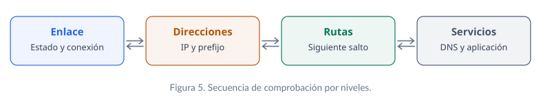
VERIFICACIÓN PROGRESIVA
Las pruebas deben realizarse de forma ordenada, desde el enlace hasta los servicios. Es importante distinguir la conectividad de la propia pasarela con cada red de la conectividad entre clientes de redes distintas.
| Prueba | Resultado esperado |
|---|---|
| Inventario de interfaces | Dos conexiones identificadas y asociadas a los segmentos correctos. |
| Estado de enlace | Interfaces habilitadas y enlace operativo. |
| Direcciones y prefijos | Valores correctos y sin duplicidades. |
| Tabla de rutas | Redes conectadas y ruta predeterminada coherente. |
| Cliente A a pasarela LAN | Comunicación local, si el filtrado permite la prueba. |
| Pasarela WAN a servidor externo | Comunicación por el segmento WAN. |
| Consulta DNS al resolvedor previsto | Respuesta coherente con la configuración del servicio. |
| Cliente A a servidor externo | No se exige éxito hasta configurar reenvío, retorno y políticas. |
HERRAMIENTAS DE DIAGNÓSTICO
| Operación | Ejemplo de herramienta en Linux | Ejemplo en Windows |
|---|---|---|
| Consultar interfaces | ip link |
Get-NetAdapter |
| Consultar direcciones | ip address |
ipconfig /all |
| Consultar rutas IPv4 | ip route |
route print -4 |
| Probar ICMP | ping -c 4 192.168.10.1 |
ping -n 4 192.168.10.1 |
| Consultar DNS | nslookup servidor.lab.test |
nslookup servidor.lab.test |
| Examinar vecinos IPv4 | ip neigh |
arp -a |
Los comandos son ejemplos de consulta y diagnóstico, no instrucciones de instalación de un producto concreto. Algunas herramientas pueden no estar instaladas por defecto. Los comandos se ejecutan desde el equipo adecuado y los destinos se adaptan al escenario real.
Comprobación por segmentos
Desde el cliente A se prueba la dirección 192.168.10.1. Desde la pasarela se prueba 198.51.100.20. Si ambas comprobaciones tienen éxito, existe evidencia de conectividad IP entre los equipos de cada segmento, pero no se ha demostrado aún el reenvío entre redes. Una prueba posterior desde el cliente A al servidor externo permitirá comprobarlo una vez configurado el encaminamiento y el camino de retorno.
INCIDENCIAS HABITUALES
| Síntoma | Posible causa | Comprobación inicial |
|---|---|---|
| Interfaz sin enlace | Cable, adaptador virtual o puerto desconectado | Estado físico o virtual del enlace |
| No se alcanza la pasarela LAN | Prefijo incorrecto, VLAN errónea, dirección duplicada o filtrado | Dirección, vecinos y segmento |
| La pasarela no llega al router externo | WAN incorrecta o enlace externo inactivo | IP WAN, enlace y vecinos |
| Se alcanza una IP pero no un nombre | Problema DNS | Consulta al resolvedor configurado |
| La pasarela llega a ambas redes pero los clientes no | Reenvío desactivado, filtrado o falta de retorno | Rutas y políticas de tránsito |
REGISTRO DE LA CONFIGURACIÓN Y LAS PRUEBAS
Como evidencia de aprendizaje, se recomienda guardar un esquema de la topología, el inventario de interfaces, la tabla de direccionamiento, el software seleccionado y las salidas de las pruebas. Cada prueba debe indicar el origen, el destino, el resultado esperado, el resultado observado y las medidas correctoras, si las hubiera.
Registro de una prueba
Origen: cliente A (192.168.10.25). Destino: interfaz LAN de la pasarela (192.168.10.1). Prueba: ping. Resultado esperado: respuesta ICMP si está permitida. Resultado observado: cuatro respuestas en el escenario de ejemplo. Conclusión: existe conectividad IP local entre ambos equipos; no permite concluir que haya acceso a Internet.
ENCAMINAMIENTO Y REENVÍO DE TRÁFICO IP
En el capítulo anterior se preparó un sistema conectado a dos redes distintas. En este capítulo se estudia cómo convertirlo en un router capaz de transportar paquetes IP entre ellas. El encaminamiento permite determinar por dónde debe salir un paquete; el reenvío permite efectuar su traslado entre interfaces.
Se trabajará inicialmente sin NAT. De esta manera se puede comprender el funcionamiento del encaminamiento y la necesidad de las rutas de retorno antes de introducir la traducción de direcciones. Las redes externas de los ejemplos utilizan prefijos reservados para documentación y representan redes simuladas, no Internet real.
CONCEPTO DE ENCAMINAMIENTO (ROUTING)
El encaminamiento es el proceso mediante el cual un sistema selecciona el camino que debe seguir un paquete IP para alcanzar su destino. Es una función de la capa de red del modelo OSI y de la capa de Internet del modelo TCP/IP.
Un router conecta redes IP diferentes. Cada interfaz lógica suele pertenecer a una subred distinta. Puede ser un dispositivo dedicado o un ordenador cuyo sistema operativo realiza las funciones de encaminamiento y reenvío.
ENTREGA DIRECTA E INDIRECTA
Cuando un equipo desea comunicarse con otro, consulta sus rutas para determinar si puede alcanzarlo directamente a través de una interfaz o si necesita un router intermedio. En una configuración sencilla, la máscara de subred permite distinguir los destinos de la propia red de los destinos externos.
| Tipo de entrega | Funcionamiento |
|---|---|
| Directa | El destino está en un enlace alcanzable directamente. Se entrega la trama al destinatario. |
| Indirecta | El destino se alcanza mediante un router. Se entrega la trama al siguiente salto, manteniendo la dirección IP del destino final. |
En Ethernet e IPv4 se utiliza ARP para averiguar la dirección MAC del destinatario directo o del siguiente salto. En IPv6 se utiliza Neighbor Discovery (NDP). Un router no propaga ordinariamente las tramas de difusión de una LAN a otra.
Destino local y remoto
El cliente A (192.168.10.25/24) desea comunicarse con el cliente B (192.168.10.26/24). Ambos están en la misma subred, por lo que A entrega la trama directamente a B. Si A quiere comunicarse con 198.51.100.20, utiliza su puerta de enlace 192.168.10.1. La dirección IP de destino sigue siendo 198.51.100.20, aunque la MAC de destino de la primera trama sea la de la pasarela.
DIFERENCIAS ENTRE CONMUTACIÓN Y ENCAMINAMIENTO
| Característica | Conmutador de capa 2 | Router |
|---|---|---|
| Unidad analizada | Trama | Paquete IP |
| Identificador principal | Dirección MAC | Prefijo IP |
| Información de decisión | Tabla MAC | Tabla de rutas |
| Ámbito habitual | Una red de capa 2 o VLAN | Varias redes IP |
Un conmutador multicapa puede realizar ambas funciones. La clasificación depende del comportamiento lógico y no exclusivamente del aspecto físico del dispositivo.
FUNCIONAMIENTO DEL ENCAMINAMIENTO DE PAQUETES IP
ESCENARIO DE REFERENCIA
Se conserva el direccionamiento del capítulo anterior. La pasarela conecta la LAN 192.168.10.0/24 con la WAN simulada 198.51.100.0/24.
| Equipo o interfaz | Dirección IP | Puerta de enlace |
|---|---|---|
| Cliente A | 192.168.10.25/24 | 192.168.10.1 |
| Cliente B | 192.168.10.26/24 | 192.168.10.1 |
| Pasarela LAN | 192.168.10.1/24 | No necesaria en esta interfaz |
| Pasarela WAN | 198.51.100.2/24 | 198.51.100.1 |
| Router externo | 198.51.100.1/24 | Según red externa |
| Servidor externo | 198.51.100.20/24 | 198.51.100.1 |
PROCESO DE REENVÍO
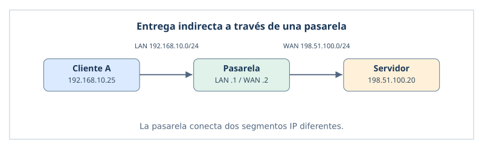
- El cliente consulta su tabla de rutas y determina el siguiente salto.
- Obtiene la dirección de capa de enlace del siguiente salto y envía una trama que contiene el paquete IP.
- El router recibe la trama, extrae el paquete y comprueba si el destino corresponde al propio router o a otro equipo.
- Si el destino es remoto y el reenvío está habilitado, consulta la tabla de rutas, determina la interfaz de salida y el siguiente salto.
- Aplica los controles pertinentes y reduce el TTL de IPv4 (o Hop Limit de IPv6). Si el valor se agota, descarta el paquete y normalmente genera un mensaje ICMP Time Exceeded.
- Si puede reenviarlo, construye una nueva trama adecuada al enlace de salida y transmite el paquete. En IPv4 se actualiza también la suma de comprobación de la cabecera.
El orden interno exacto de los controles depende de la implementación. Si no hay ruta válida, el paquete se descarta y el router puede notificar el destino inalcanzable mediante ICMP.
DIRECCIONES IP Y MAC DURANTE EL RECORRIDO
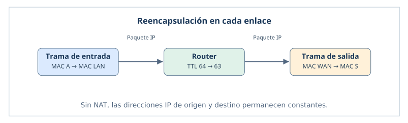
Sin NAT, las direcciones IP de origen y destino se conservan durante el encaminamiento ordinario. Las direcciones MAC cambian al atravesar cada router en enlaces Ethernet. El TTL también disminuye en cada salto de encaminamiento.
| Campo | Trama cliente → pasarela | Trama pasarela → servidor |
|---|---|---|
| IP origen | 192.168.10.25 | 192.168.10.25 |
| IP destino | 198.51.100.20 | 198.51.100.20 |
| MAC origen | MAC del cliente | MAC WAN de la pasarela |
| MAC destino | MAC LAN de la pasarela | MAC del servidor |
| TTL (ejemplo) | 64 | 63 |
Captura de paquetes en dos interfaces
Si se captura el mismo paquete ICMP en la interfaz LAN y WAN de la pasarela, se observarán las mismas direcciones IP y diferentes cabeceras Ethernet. El TTL de salida será una unidad inferior al de entrada. Si se habilitase NAT de origen, también podría cambiar la dirección IP de origen, pero ese mecanismo se estudiará en el siguiente capítulo.
TRADUCCIÓN DE DIRECCIONES DE RED (NAT)
En el capítulo anterior se estudió cómo un router reenvía paquetes entre redes sin modificar sus direcciones IP de origen y destino. En este capítulo se añade un mecanismo que permite modificar dichas direcciones y, en determinados casos, los puertos de transporte: NAT (Network Address Translation).
El objetivo es comprender cómo varios equipos privados pueden compartir una dirección IPv4 externa, cómo se mantienen las comunicaciones de retorno y cómo se puede publicar un servicio interno. Se conserva el escenario de los capítulos anteriores. Las direcciones 198.51.100.0/24 representan una red externa simulada: están reservadas para documentación y no son direcciones utilizables en Internet real.
INTRODUCCIÓN Y NECESIDAD DE NAT
IPv4 utiliza direcciones de 32 bits. La disponibilidad limitada de direcciones públicas y el crecimiento del número de dispositivos motivaron el uso generalizado de redes privadas y mecanismos de traducción.
Las direcciones privadas definidas en RFC 1918 pueden reutilizarse en redes independientes, pero no se encaminan en Internet público.
| Bloque privado | Máscara | Ejemplo |
|---|---|---|
| 10.0.0.0/8 | 255.0.0.0 | 10.1.2.3 |
| 172.16.0.0/12 | 255.240.0.0 | 172.20.1.10 |
| 192.168.0.0/16 | 255.255.0.0 | 192.168.10.25 |
Una organización puede utilizar estos bloques internamente sin adquirir una dirección pública por dispositivo. Para acceder a Internet mediante IPv4, una solución habitual consiste en traducir las direcciones privadas a una o varias direcciones públicas en la pasarela.
NAT no es imprescindible para interconectar redes: dos redes privadas pueden comunicarse mediante encaminamiento ordinario si existen rutas válidas en ambos sentidos y el filtrado lo permite. Tampoco proporciona por sí mismo conectividad a Internet: la pasarela debe disponer de conectividad externa y de las rutas necesarias.
Una dirección externa para varios equipos
Una pequeña empresa dispone de veinte ordenadores con direcciones privadas y una unica dirección IPv4 pública. Mediante PAT, una modalidad de NAT que utiliza también los puertos, los veinte equipos pueden mantener comunicaciones simultáneas con Internet compartiendo esa dirección externa.
PRINCIPIOS DE FUNCIONAMIENTO
NAT modifica determinados campos de los paquetes cuando atraviesan un dispositivo traductor, habitualmente un router o cortafuegos. La traducción puede afectar al origen, al destino o a ambos. En una comunicación con traducción dinámica se mantiene información que permite aplicar la transformación inversa a las respuestas.
ESCENARIO DE REFERENCIA
| Equipo o interfaz | Dirección IPv4 | Puerta de enlace |
|---|---|---|
| Cliente A | 192.168.10.25/24 | 192.168.10.1 |
| Cliente B | 192.168.10.26/24 | 192.168.10.1 |
| Pasarela LAN | 192.168.10.1/24 | — |
| Pasarela WAN | 198.51.100.2/24 | 198.51.100.1 |
| Router externo | 198.51.100.1/24 | Según red externa |
| Servidor externo | 198.51.100.20/24 | 198.51.100.1 |
COMUNICACIÓN DE SALIDA
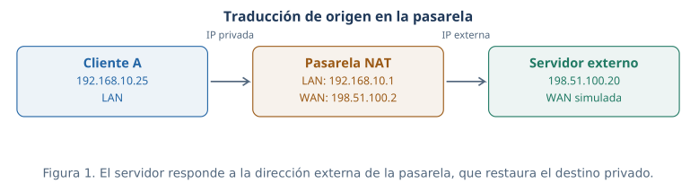
- El cliente A genera un paquete destinado al servidor externo y lo entrega a su puerta de enlace.
- La pasarela determina la salida hacia la WAN y aplica la traducción de origen correspondiente.
- El paquete llega al servidor con la dirección externa de la pasarela como origen.
- El servidor responde a esa dirección externa, que es alcanzable sin conocer la red privada.
- La pasarela identifica la comunicación, restaura el destino privado y reenvía la respuesta al cliente A.
| Tramo | IP origen | IP destino |
|---|---|---|
| Solicitud en LAN | 192.168.10.25 | 198.51.100.20 |
| Solicitud en WAN | 198.51.100.2 | 198.51.100.20 |
| Respuesta en WAN | 198.51.100.20 | 198.51.100.2 |
| Respuesta en LAN | 198.51.100.20 | 192.168.10.25 |
El servidor externo no necesita una ruta hacia 192.168.10.0/24 para esta comunicación traducida. La pasarela sí necesita conocer esa red, normalmente mediante su ruta conectada directamente.
TRADUCCIÓN DE DIRECCIONES Y PUERTOS
TRADUCCIÓN DE LA CABECERA IP
En IPv4, NAT puede cambiar la dirección IP de origen o destino. Al modificar la cabecera se debe actualizar su suma de comprobación. En TCP y UDP, también se ajusta la suma de comprobación de transporte cuando corresponde, pues intervienen las direcciones IP en la pseudocabecera.
Como NAT se realiza normalmente durante el reenvío, el router también reduce el TTL. Este decremento pertenece al encaminamiento, no a NAT. Las direcciones MAC de las tramas Ethernet cambian entre enlaces por el mismo motivo.
TRADUCCIÓN DE PUERTOS DE TRANSPORTE
TCP y UDP utilizan puertos de 16 bits. Los puertos permiten identificar aplicaciones y distinguir comunicaciones simultáneas. Un flujo se identifica habitualmente mediante el protocolo, las direcciones IP de origen y destino y los puertos de origen y destino (quíntupla).
La pasarela puede conservar el puerto de origen si no existe conflicto o asignar otro puerto externo disponible. No es necesario que todos los puertos se modifiquen. TCP y UDP tienen espacios de puertos independientes.
Dos clientes con el mismo puerto de origen
A (192.168.10.25:51000) y B (192.168.10.26:51000) acceden por TCP a 198.51.100.20:443. La pasarela traduce A a 198.51.100.2:40001 y B a 198.51.100.2:40002. Aunque los clientes han elegido el mismo puerto local, el servidor distingue ambas conexiones gracias a sus diferentes puertos externos. Los números externos son ilustrativos y los selecciona el traductor según su implementación.
| Cliente | Origen antes de NAT | Origen después de NAT | Destino TCP |
|---|---|---|---|
| A | 192.168.10.25:51000 | 198.51.100.2:40001 | 198.51.100.20:443 |
| B | 192.168.10.26:51000 | 198.51.100.2:40002 | 198.51.100.20:443 |
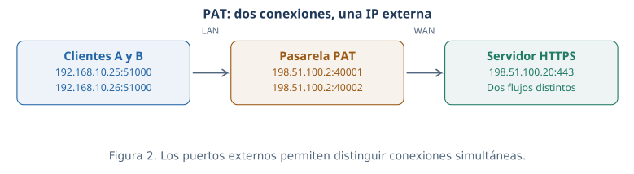
PROTOCOLOS SIN PUERTOS TCP O UDP
ICMP no utiliza puertos TCP ni UDP. Para traducir consultas ICMP Echo, una implementación de NAT puede utilizar y modificar el identificador de la consulta. También debe tratar correctamente los mensajes de error ICMP que contienen parte del paquete original. Por eso, comprobar NAT exclusivamente mediante ping no permite verificar todos sus mecanismos de traducción.
TIPOS Y MECANISMOS DE NAT
Las modalidades de NAT pueden clasificarse por la forma de asignar direcciones, por el campo que se modifica y por el uso de puertos. Estas clasificaciones no son excluyentes: una traducción de origen puede ser estática, dinámica o combinarse con PAT.
NAT ESTÁTICO
Establece una correspondencia fija entre una dirección interna y otra externa. En su modalidad básica uno a uno, una dirección externa se dedica a una dirección interna. Si se configura la traducción correspondiente en ambos sentidos, permite identificar de manera estable al equipo interno desde el exterior, siempre que el encaminamiento y las políticas de seguridad lo permitan.
Correspondencia fija
Se asocia 192.168.10.25 a 198.51.100.10. Las comunicaciones salientes del cliente se presentan con esa dirección externa y las entrantes dirigidas a ella pueden traducirse hacia el cliente. La dirección externa adicional debe estar asignada o encaminada correctamente hacia la pasarela.
NAT DINÁMICO
Selecciona una dirección externa de un conjunto de direcciones disponibles (pool). La asignación se realiza cuando es necesaria y puede liberarse después de un periodo de inactividad, según la implementación.
Pool de direcciones
Una empresa dispone de un conjunto de cinco direcciones externas, desde 198.51.100.10 hasta 198.51.100.14, correctamente asignadas a la pasarela. Si utiliza NAT dinámico básico uno a uno, como máximo cinco direcciones internas pueden tener una asignación simultánea. Para compartir direcciones entre más clientes puede utilizar PAT.
SNAT (SOURCE NAT)
Modifica la dirección IP de origen y, si es necesario, el puerto de origen. Es habitual en las comunicaciones iniciadas desde una LAN hacia una WAN. La transformación inversa afecta al destino de las respuestas.
En una pasarela cuya dirección externa es fija, se puede especificar explícitamente dicha dirección como origen traducido. Una regla debe delimitar qué redes de origen y qué salidas están sujetas a traducción para evitar modificar tráfico interno innecesariamente.
DNAT (DESTINATION NAT)
Modifica la dirección IP de destino y, opcionalmente, el puerto de destino. Se utiliza, entre otros fines, para dirigir comunicaciones entrantes hacia servicios de una red privada.
Publicación de un servidor web
Un cliente externo 198.51.100.20:52000 accede por TCP a 198.51.100.2:8080. La pasarela cambia el destino a 192.168.10.25:80. El servidor interno recibe la solicitud y responde a través de 192.168.10.1. La pasarela realiza la traducción inversa del origen de la respuesta, de modo que el cliente externo sigue comunicándose con 198.51.100.2:8080. Debe existir una regla de filtrado que autorice el acceso al servicio.
La publicación de servicios, sus riesgos y la redirección de puertos se desarrollarán con mayor profundidad en el capítulo correspondiente.
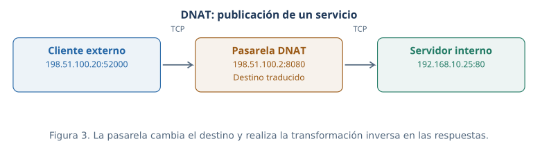
PAT/NAPT (PORT ADDRESS TRANSLATION)
PAT, también denominado NAPT (Network Address and Port Translation), permite compartir una dirección IPv4 externa mediante la traducción de direcciones y puertos. Es el mecanismo habitual de acceso a Internet en routers domésticos y de pequeñas empresas.
La cantidad de comunicaciones simultáneas no equivale necesariamente a 65 536 por dirección: depende del protocolo, de los puertos disponibles, de los destinos, de la política de asignación y de la capacidad de la tabla de seguimiento. Si se agotan los recursos, las nuevas comunicaciones pueden fallar aunque las existentes continúen funcionando.
ENMASCARAMIENTO IP (MASQUERADING)
Es una modalidad de traducción de origen que selecciona la dirección externa de la interfaz de salida automáticamente. Resulta especialmente útil cuando la dirección WAN se obtiene dinámicamente, por ejemplo mediante DHCP o PPP.
Si cambia la dirección externa, las conexiones existentes pueden interrumpirse. El enmascaramiento no garantiza que una sesión TCP sobreviva a dicho cambio. Es frecuente que el sistema elimine asociaciones antiguas al perderse la interfaz o su dirección.
| Mecanismo | Qué caracteriza su funcionamiento | Uso habitual |
|---|---|---|
| NAT estático | Correspondencia fija | Asociación estable de direcciones |
| NAT dinámico | Dirección seleccionada de un pool | Conjunto de direcciones externas |
| SNAT | Modifica el origen | Salida hacia Internet |
| DNAT | Modifica el destino | Publicación de servicios |
| PAT/NAPT | Utiliza también puertos | Compartir una dirección externa |
| Masquerading | Obtiene el origen de la interfaz | WAN con IP dinámica |
ACCESO DE UNA RED PRIVADA A INTERNET MEDIANTE NAT
REQUISITOS DE CONFIGURACIÓN
La pasarela debe disponer de interfaces LAN y WAN operativas, rutas correctas, reenvío IPv4 habilitado y un mecanismo NAT configurado. El cliente debe tener una dirección de su red privada, máscara adecuada, puerta de enlace y, cuando se empleen nombres, acceso a un resolvedor DNS.
El filtrado debe permitir las comunicaciones salientes autorizadas y el tráfico de retorno asociado. La configuración de NAT no sustituye esta política. Si el dispositivo externo es a su vez otro traductor, puede existir doble NAT.
EJEMPLO ILUSTRATIVO EN LINUX
Aunque el documento es general, se muestra un ejemplo de sintaxis de nftables para relacionar los conceptos con una configuración real. La instalación, persistencia y administración completa se estudiarán en el documento específico de Linux. Se presupone una máquina de laboratorio con nftables disponible, interfaces lan0 y wan0 (adaptar a los nombres reales), direccionamiento y encaminamiento ya configurados y sin reglas NAT incompatibles.
sysctl -w net.ipv4.ip_forward=1
nft add table ip ra8_nat
nft 'add chain ip ra8_nat postrouting { type nat hook postrouting priority srcnat; policy accept; }'
nft add rule ip ra8_nat postrouting oifname wan0 ip saddr 192.168.10.0/24 snat to 198.51.100.2
La primera orden habilita temporalmente el reenvío IPv4. Las siguientes crean una tabla de NAT IPv4, una cadena de traducción de origen y una regla que aplica SNAT a los paquetes de la LAN que salen por la WAN. La cadena NAT no es una política de filtrado.
Si la WAN tiene una dirección dinámica, se puede utilizar la siguiente regla en lugar de la regla SNAT anterior, no además de ella:
nft add rule ip ra8_nat postrouting oifname wan0 ip saddr 192.168.10.0/24 masquerade
Para retirar exclusivamente la tabla creada en este ejemplo se puede ejecutar sudo nft delete table ip ra8_nat. No se deben borrar las reglas de un cortafuegos existente para realizar esta práctica. Las órdenes modifican la configuración en ejecución; la persistencia depende de la distribución y del gestor de configuración utilizado.
DNS Y NAT
NAT no resuelve nombres de dominio. Si un cliente alcanza un servidor por su dirección IP, pero no por su nombre, debe comprobarse DNS por separado. El tráfico hacia el resolvedor también puede necesitar encaminamiento y traducción, dependiendo de dónde se encuentre.
SEGUIMIENTO DE CONEXIONES (CONNECTION TRACKING)
El seguimiento de conexiones registra información sobre los flujos que atraviesan la pasarela. Permite asociar los paquetes de respuesta con una comunicación anterior y aplicar las transformaciones inversas necesarias. En Linux, esta función forma parte del subsistema Netfilter.
TABLA DE SEGUIMIENTO
Una representación simplificada de las asociaciones del ejemplo PAT es la siguiente:
| Protocolo | Origen interno | Origen traducido | Destino remoto |
|---|---|---|---|
| TCP | 192.168.10.25:51000 | 198.51.100.2:40001 | 198.51.100.20:443 |
| TCP | 192.168.10.26:51000 | 198.51.100.2:40002 | 198.51.100.20:443 |
Cuando llega una respuesta desde el servidor al puerto 40002, la pasarela reconoce la asociación del cliente B y restaura su destino 192.168.10.26:51000. En una implementación real también se registran otros campos, estados y tiempos de expiración.
ESTADOS Y CADUCIDAD
TCP dispone de establecimiento y cierre de conexión. El seguimiento utiliza información de los paquetes observados y temporizadores para mantener o eliminar asociaciones. UDP no establece conexiones como TCP, pero el traductor puede mantener un estado temporal para reconocer sus respuestas. ICMP también puede tener asociaciones temporales.
| Estado de seguimiento (ejemplo Netfilter) | Significado general |
|---|---|
| NEW | Comunicación nueva o aún sin tráfico en ambos sentidos |
| ESTABLISHED | Comunicación reconocida con tráfico observado en ambos sentidos |
| RELATED | Comunicación nueva relacionada con otra conocida, como ciertos errores ICMP |
| INVALID | Paquete que no puede asociarse correctamente a un estado válido |
Estos estados no equivalen exactamente a los estados internos de TCP. El seguimiento también puede utilizarse sin NAT para el filtrado con estado. En nftables, normalmente la primera unidad de tráfico de una conexión determina la asociación NAT; los paquetes posteriores utilizan la asociación registrada. Cambiar una regla no implica necesariamente cambiar las traducciones de conexiones ya existentes.
DIFERENCIAS ENTRE NAT Y ENCAMINAMIENTO
| Característica | NAT | Encaminamiento |
|---|---|---|
| Función principal | Traducción de direcciones y puertos | Selección de rutas y reenvío de paquetes |
| Modificación de paquetes | Puede modificar IP y puertos | Normalmente no modifica IP ni puertos |
| Estado de conexión | Puede mantener estado para traducción | Mantiene rutas, no estado de conexión |
| Transparencia | Puede ocultar la red interna | Generalmente transparente para el usuario |
| Complejidad | Requiere configuración de traducción | Requiere configuración de rutas |
VENTAJAS Y LIMITACIONES DE NAT
| Ventaja | Explicación |
|---|---|
| Ahorro de IPv4 públicas | PAT permite compartir direcciones externas. |
| Independencia del direccionamiento interno | Un cambio de dirección externa no exige renumerar toda la LAN. |
| Reutilización de rangos privados | Redes independientes pueden usar rangos iguales. |
| Publicación selectiva | DNAT permite dirigir determinados destinos y puertos a servicios internos. |
| Limitación | Consecuencia |
|---|---|
| Pérdida de transparencia extremo a extremo | El destino no ve necesariamente la dirección original. |
| Conexiones entrantes | Pueden requerir una asociación explícita o mecanismos adicionales. |
| Protocolos que incluyen IP o puertos en sus datos | Algunos necesitan mecanismos auxiliares o adaptaciones. |
| Recursos limitados | Las tablas y los puertos pueden agotarse. |
| Doble NAT y CG-NAT | Complican la publicación y el diagnóstico. |
| Trazabilidad | Puede ser necesario registrar direcciones, puertos y marcas de tiempo. |
NAT NO ES UN CORTAFUEGOS
La ausencia de una asociación dinámica suele dificultar las conexiones entrantes no solicitadas, pero eso no equivale a una política de seguridad. Una regla DNAT puede hacer accesible un servicio y una configuración permisiva puede reenviar tráfico no deseado. El control explícito de acceso debe realizarse mediante reglas de filtrado. Tampoco NAT cifra los datos ni proporciona autenticación o anonimato.
DOBLE NAT Y CG-NAT
Si una pasarela privada se conecta detrás de otro router que realiza NAT, los paquetes pueden traducirse dos veces. En CG-NAT (Carrier-Grade NAT), el operador comparte direcciones públicas entre abonados. El bloque 100.64.0.0/10 está reservado para espacio de direcciones compartido y puede utilizarse en estas infraestructuras. No deben confundirse con el PAT habitual de IPv4.
Publicación detrás de CG-NAT
Un router doméstico recibe una dirección WAN 100.64.12.34. Aunque se configure una redirección de puertos en ese router, no se controla necesariamente la traducción del operador. Para recibir conexiones desde Internet pueden ser necesarias una dirección pública, conectividad IPv6 adecuada o una solución alternativa autorizada.
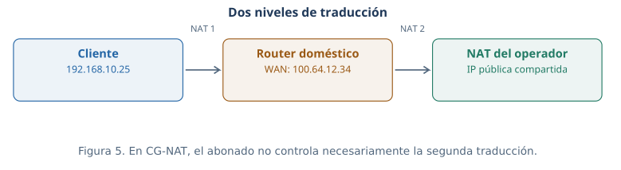
CONSIDERACIONES SOBRE IPv6
IPv6 utiliza direcciones de 128 bits y dispone de un espacio de direccionamiento mucho mayor. Una red puede disponer de prefijos globales para sus equipos, sin recurrir al PAT de IPv4 por escasez de direcciones.
Las direcciones globales IPv6 pueden ser encaminables, pero eso no significa que todos los servicios deban estar accesibles desde Internet. La política de seguridad debe establecerse mediante cortafuegos y otros mecanismos de control. Las direcciones locales únicas (ULA, fc00::/7) no se destinan al encaminamiento global de Internet.
Existen mecanismos de traducción relacionados con IPv6. NAT64 permite, junto con los mecanismos necesarios de resolución o síntesis de direcciones, que clientes IPv6 accedan a servicios IPv4. NPTv6 es un mecanismo experimental de traducción de prefijos IPv6 sin traducción de puertos. No deben confundirse con el PAT habitual de IPv4.
En una red de doble pila, la comunicación IPv4 puede utilizar NAT mientras la comunicación IPv6 utiliza encaminamiento y filtrado sin traducción. El diagnóstico debe distinguir ambas familias de direcciones.
VERIFICACIÓN DEL FUNCIONAMIENTO DE NAT
PROCEDIMIENTO DE COMPROBACIÓN
| Prueba | Qué permite comprobar |
|---|---|
| Revisar direcciones y rutas | Configuración de LAN, WAN y siguiente salto |
| Ping a la pasarela LAN | Conectividad local del cliente |
| Acceso al servidor externo desde la pasarela | Conectividad externa de la pasarela |
| Comprobar IP forwarding | Capacidad de reenvío entre interfaces |
| Revisar reglas NAT y filtrado | Selección del tráfico y autorización |
| Acceder a un servicio externo desde el cliente | Comunicación real de aplicación |
| Capturar en LAN y WAN | Traducción de direcciones y puertos |
| Revisar asociaciones de seguimiento | Correspondencia entre flujos originales y traducidos |
HERRAMIENTAS DE DIAGNÓSTICO
En Linux, las siguientes órdenes permiten revisar distintas partes del sistema. Los nombres de interfaz deben adaptarse al laboratorio. conntrack y tcpdump pueden requerir instalación previa.
ip -br address
ip route
sysctl net.ipv4.ip_forward
nft list ruleset
conntrack -L -p tcp
Desde el cliente, si existe un servidor HTTP en 198.51.100.20, se puede realizar una prueba con curl http://198.51.100.20/. Si se utiliza HTTPS, debe emplearse un nombre y certificado válidos para evitar confundir un error TLS con un fallo de NAT.
CAPTURA SIMULTÁNEA EN DOS INTERFACES
En dos terminales de la pasarela se pueden ejecutar las siguientes órdenes:
tcpdump -ni lan0 'host 198.51.100.20 and tcp port 80'
tcpdump -ni wan0 'host 198.51.100.20 and tcp port 80'
A continuación se inicia una conexión HTTP desde el cliente A. El resultado esperado es observar la IP privada de origen en LAN y la IP externa de la pasarela en WAN. En las respuestas se debe observar la restauración del destino privado. El puerto puede cambiar o conservarse.
Interpretación de una captura
En LAN se observa 192.168.10.25:51000 > 198.51.100.20:80. En WAN se observa 198.51.100.2:40001 > 198.51.100.20:80. En sentido inverso aparece 198.51.100.20:80 > 198.51.100.2:40001 en WAN y 198.51.100.20:80 > 192.168.10.25:51000 en LAN. Estas líneas son resultados ilustrativos, no una captura real.
INCIDENCIAS HABITUALES
| Síntoma | Posible causa o comprobación |
|---|---|
| El cliente no alcanza la pasarela | IP, máscara, enlace o VLAN incorrectos |
| La pasarela alcanza el servidor, pero el cliente no | Reenvío desactivado, filtrado o NAT incorrecto |
| El paquete sale por WAN con IP privada | La regla NAT no coincide o no se aplica |
| Sale traducido, pero no vuelve respuesta | Servicio remoto, ruta externa o filtrado |
| La respuesta llega a WAN, pero no a LAN | Estado de conexión, ruta interna o filtrado |
| Funciona por IP, pero no por nombre | Problema de resolución DNS |
| Fallan únicamente conexiones nuevas | Agotamiento de recursos o cambio de reglas |